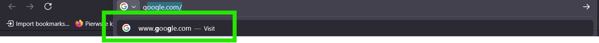
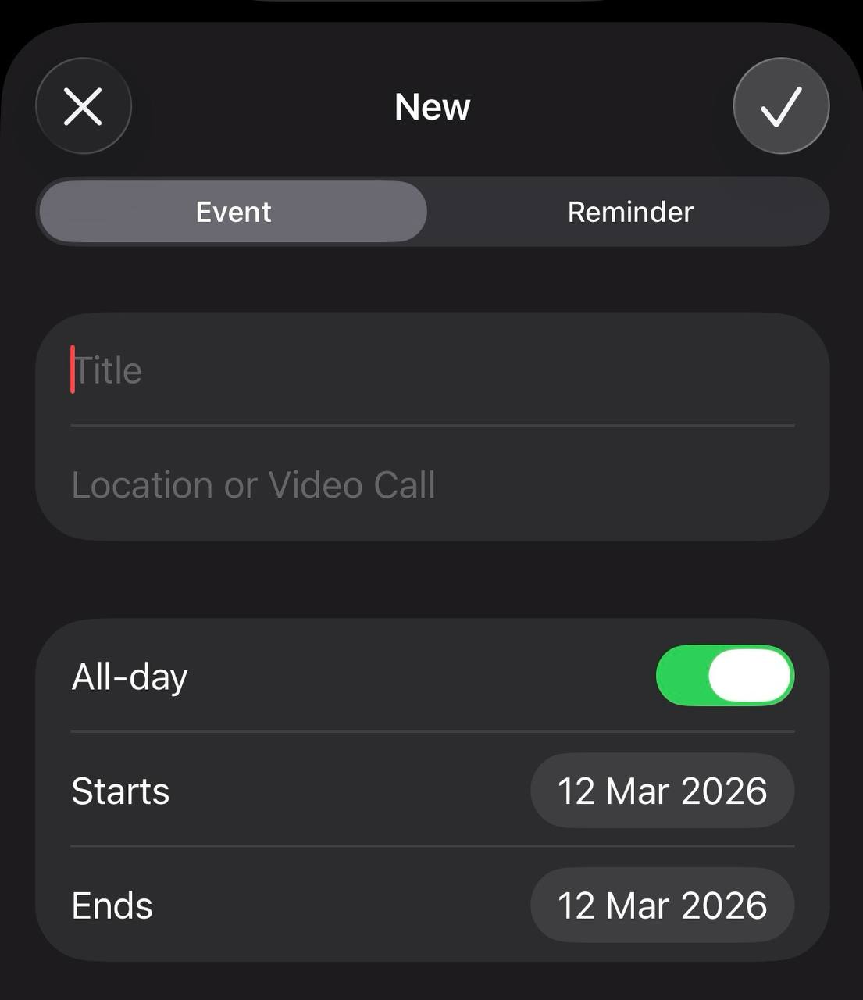

5. Zapobieganie błędom
EN: Error prevention. Even better than good error messages is a careful design which prevents a problem from occurring in the first place.
PL: Jeszcze lepsze od dobrych komunikatów o błędach jest staranne zaprojektowanie systemu, które w ogóle zapobiega występowaniu problemów.
Przykład 1: Strona Internetowa (Desktop)

Uzasadnienie: Podpowiedzi podczas wpisywania w wyszukiwarkę pomagają uniknąć literówek i prowadzą użytkownika do poprawnych wyników.
Przykład 2: Aplikacja Mobilna

Uzasadnienie: Zastosowanie kalendarza zamiast ręcznego wpisywania daty uniemożliwia użytkownikowi wprowadzenie błędnego formatu.